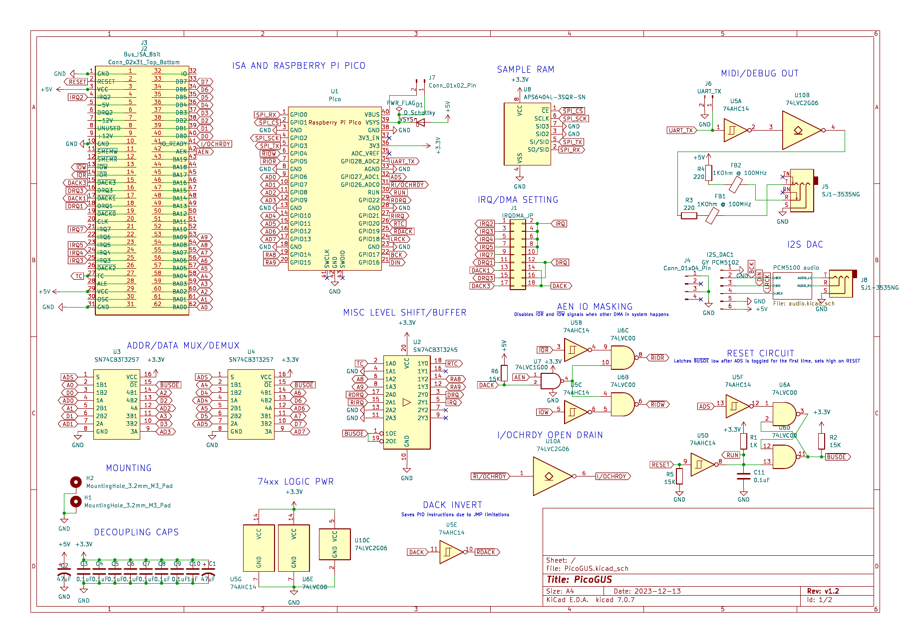
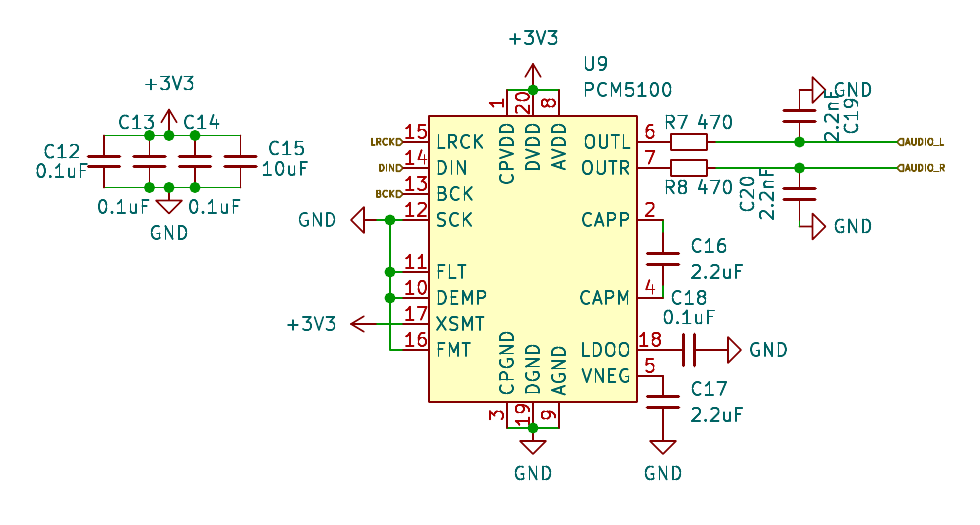

PicoGUS：给老 PC 接回一块声卡
Ian Scott 的 PicoGUS 是插在复古 PC 的 ISA 扩展槽里的开源声卡。它以 RP2040 模拟 Gravis UltraSound，也能切换到 AdLib、Sound Blaster 等模式。Gravis 模式从内存取样本、调音高和音量再混音，AdLib 模式则用 FM 合成发声。DOS 应用仍按它认识的那种声卡访问 I/O 端口，这让一张板卡成了观察两种发声方式的入口。作者发布的 2.0 硬件把 RP2040 直接焊在板上，和插着一块 Pico 开发板的早期方案可以分开看。
从 ISA 地址线读起
从 v1.2 原理图第 1 页的 ISA 连接器出发，沿 A0 和 D0 找到地址、数据之间的复用逻辑。再打开固件里的 isa_io.pio。写入状态机等 ISA 的写信号，取 10 位地址，切换复用器，再取 8 位数据。固件识别地址后，状态机可借 IOCHRDY 让主机等这次写操作处理完。读入状态机的另一面是决定何时驱动数据线。这些细节解释了为什么仅仅把相同的音色算法移植到开发板，还做不出一张能用的 ISA 声卡。
样本怎样离开声卡
声卡的另一头可以从 gusplay.cpp 追。混出的左右声道样本经 I²S 送出，v1.2 原理图第 2 页把 BCK、LRCK 和 DIN 接到 PCM5100，模拟输出再经阻容网络送往线路输出。这里有一个值得用在自己 PCB 上的读图顺序。先把旧主机接口、样本处理和模拟输出划成三段，再找每段之间的信号和时钟。
对照兼容表与版本
11 月 7 日（北京时间）的 v4.2.0-beta.2 仍是预发行版。作者提到一处具体修改是让模拟的 GF1 在软件关闭线路输出时实际静音，解决 CapaMOD 暂停后仍有音符发声的问题。判断是否适合自己的老机器，可以先查兼容清单里的主板和程序，再看对应模式的 DOS 配置，核实 I/O 地址、IRQ 和 DMA。准备做板时，按手头的硬件版本找原理图和 BOM。

